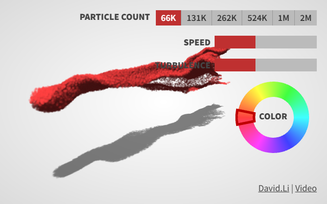

Paint
Fluid paint you can drag across the canvas; pigment advects, bleeds and never dries.
David Li · 4 works · complete source in this repository
Paint, flow, waves and fluid — four WebGL studies that became the reference for interactive liquids on the web.
颜料、流场、海浪与流体。四件把「网页上的液体」变成公共语法的作品。

Preview from the source repositoryFluid paint you can drag across the canvas; pigment advects, bleeds and never dries.
A particle field follows curl noise; sliders expose the forces behind the current.
A height-field ocean with a movable camera and a wall of controls; the original WebGL wave lab.
David Li's classic Navier–Stokes solver, rendered as ink suspended in a glass box.